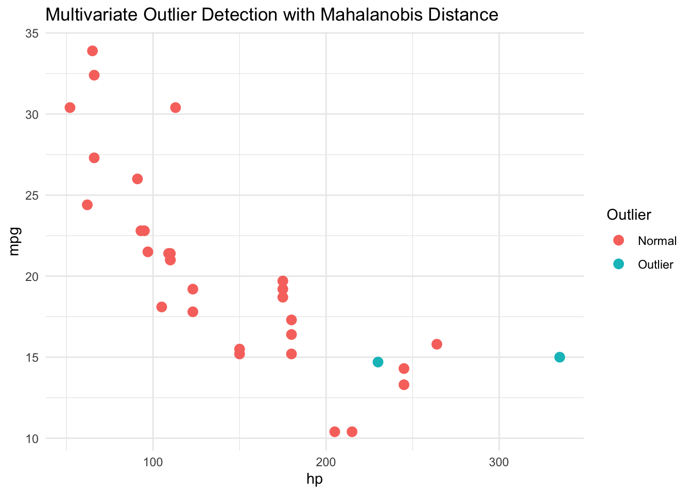

# Example multivariate dataset
data <- mtcars[, c("mpg", "disp", "hp", "wt")]
# Calculate Mahalanobis distance
mahalanobis_dist <- mahalanobis(data, colMeans(data), cov(data))
# Set chi-square threshold for outlier detection (95% confidence)
threshold <- qchisq(0.95, df = ncol(data))
# Identify outliers
outliers <- mahalanobis_dist > threshold
print(outliers) Mazda RX4 Mazda RX4 Wag Datsun 710 Hornet 4 Drive
FALSE FALSE FALSE FALSE
Hornet Sportabout Valiant Duster 360 Merc 240D
FALSE FALSE FALSE FALSE
Merc 230 Merc 280 Merc 280C Merc 450SE
FALSE FALSE FALSE FALSE
Merc 450SL Merc 450SLC Cadillac Fleetwood Lincoln Continental
FALSE FALSE FALSE FALSE
Chrysler Imperial Fiat 128 Honda Civic Toyota Corolla
TRUE FALSE FALSE FALSE
Toyota Corona Dodge Challenger AMC Javelin Camaro Z28
FALSE FALSE FALSE FALSE
Pontiac Firebird Fiat X1-9 Porsche 914-2 Lotus Europa
FALSE FALSE FALSE FALSE
Ford Pantera L Ferrari Dino Maserati Bora Volvo 142E
FALSE FALSE TRUE FALSE # Visualise results
library(ggplot2)
data$Outlier <- ifelse(outliers, "Outlier", "Normal")
ggplot(data, aes(x = hp, y = mpg, color = Outlier)) +
geom_point(size = 3) +
labs(title = "Multivariate Outlier Detection with Mahalanobis Distance") +
theme_minimal()